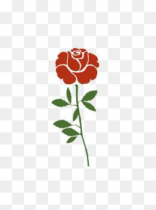

基本信息
姓名：叶欣瑶 籍贯：江西 身高：159cm 体重：55kg
我的爱好
自我评价
我是一个充满矛盾（？）的人，对于不熟悉的人，我不爱说话，不善言辞，看起来文静内敛；而逐渐熟知后，我又非常热情开朗，乐于表达自己。我喜欢认识新的盆友，愿意主动去释放善意。
我的想法
对于未来，有太多的不确定性，但我一直有一种盲目（？）的自信，相信未来一定会非常好，我一定能成为我一直想要成为的那种人：足够自信，充满睿智，自由中又有自律，从容冷静，拥有丰富的阅历，见过很多人，经历过很多事，人生是灿烂精彩的。
这里分享我喜欢的一段话：好的生活方式，莫过于和一群志同道合的人，一起奔跑在理想的路上，回头有一路的故事，低头有坚定的脚步，抬头有清晰的远方。
关于我，还有很多很多……
 感谢您的来访，希望喜欢！！